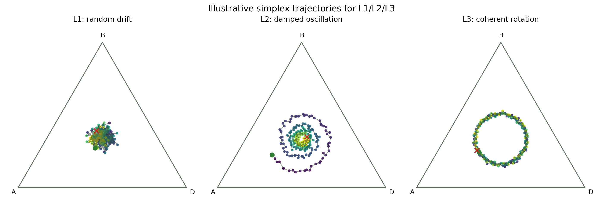

「個性地下城」人格動力學研究報告
本版重組重點：兩段式瓶頸敘事
本報告刻意把 L2→L3 的故事拆成兩條主線：先證明「理論模型中可突破」，再嚴格呈現「應用落地時重新卡關」。這樣能避免把不同層級的結果混為一談，並清楚呈現研究貢獻與未解瓶頸。
- 第一部先講清楚：在數學理論模型驗證線，L2→L3 相對快速被打破，且已完成 L3 存在性驗證。
- 第二部再獨立說明：進入實際應用層後，L2→L3 瓶頸重新出現且更嚴重，形成結構性卡關。
- 最後補一章工程藍圖整理：把 Track B v2 的流程鎖定、Tier 治理、決策守門條件整成可落地規格。
目錄
1. 研究背景、核心問題與分級定義
「個性地下城」要解決的，不是讓 AI（人工智慧）角色偶爾出現有趣行為，而是讓整體系統長期產生可區分、可重現、可治理的人格動力學。換句話說，我們要的是一個會穩定演化的動態社群，而不是短期噪音。
1.1 先用一句話理解本研究
本文的核心任務是：在三策略互動系統中，找到一種能穩定把系統從 Level 2（等級 2）推進到 Level 3（等級 3）的機制，並確認這件事在不同 seed（隨機種子）與不同流程下都成立。
1.2 什麼是「博弈結構」
在這篇研究裡，博弈結構指的是三種策略之間「誰克制誰、誰得分、誰失分」的規則，也就是 payoff（報酬）規則本身。它像整個系統的遊戲規格書，決定了動態會往哪裡走。
這個矩陣的直覺是「循環克制」而非單點最優：某策略會在一個方向佔優勢，但在另一個方向吃虧，所以系統不容易停在單一策略。
| 策略 | 優勢方向 | 劣勢方向 | 含義 |
|---|---|---|---|
| Aggressive（進攻型，A） | 對 Balanced為 +a | 對 Defensive為 -b | 強勢同時也有明確弱點 |
| Defensive（防禦型，D） | 對 Aggressive為 +a | 對 Balanced為 -b | 不是最強，而是輪替中的一環 |
| Balanced（平衡型，B） | 對 Defensive為 +a | 對 Aggressive為 -b | 形成封閉循環，不讓系統單點收斂 |
1.3 什麼是 RPS（Rock-Paper-Scissors，剪刀石頭布）幾何
RPS（Rock-Paper-Scissors，剪刀石頭布）幾何是把三策略比例放到 simplex（單純形，三角形）中觀察：三個頂點分別代表 100% A、100% D、100% B；三角形內任何一點都代表一組策略比例。若系統沿著三角形持續繞行，就代表策略主導權在輪替，這是 RPS動力學最有辨識度的行為。

圖中三個子圖可直接對應本研究的判讀邏輯：不是只看「有沒有波動」，而是看「是否存在可持續、方向一致的旋轉」。這是區分 L2 與 L3 的關鍵依據。
1.4 為什麼要分 L1/L2/L3（動態品質）
研究不只要問「有沒有動」，還要問「動得好不好、穩不穩、可不可以重現」。因此本文用三個等級描述動態品質：
| 等級 | 觀測特徵 | 解讀 |
|---|---|---|
| Level 1 | 無方向、隨機漂移 | 多為噪音，難以形成穩定人格敘事 |
| Level 2 | 固定點或低振幅震盪 | 有穩定但偏單調，容易掉回 plateau（停滯平台） |
| Level 3 | 方向一致且可持續旋轉 | 可解釋、可重現、可治理，最符合應用目標 |
本研究把 L3 視為主要尋找對象，是因為只有 L3 同時滿足三個實用條件：可解釋（知道為何旋轉）、可重現（跨 seed 仍成立）、可治理（可調可控）。這也是本文所有實驗設計與判準的核心出發點。
1.5 為什麼要觀測「旋轉動態」
2. 驗證方法與判準（SDD（規格驅動開發） + 指標 + Gate（門檻））
本專案以 SDD（Spec-Driven Development，規格驅動開發）為核心方法，先定義契約、再變更程式。這個流程確保每次機制調整都可回歸、可比對、可重現，避免研究敘事被「一次性幸運結果」主導。分層上亦嚴格遵守架構不變條件，避免分析與模擬互相污染。
評估採用 Stage1（振幅）、Stage2（主頻）與 Stage3（方向一致）三級指標，並用固定 burn-in/tail（燃入期/尾段）視窗與 Gate（門檻）規則判讀。所有核心結論都要求 seed-level（種子層級）證據，而非只看 aggregate uplift（整體提升幅度）。這套規範是後續兩條主線能夠公平比較的基礎。
3. 第一部：數學理論模型驗證線（L2→L3 可突破）
第一部的任務非常明確：先在可控且干擾較低的理論驗證環境中回答「Level 3是否客觀存在」。這一階段不急著處理完整世界模型，而是先鎖定核心旋轉機制，確認系統確實可以產生方向一致循環，避免後續工程投入建立在錯誤假設上。
此線的實作策略是：逐步解除 broadcast consensus（廣播式共識）、引入異質學習動力、再用方向性不對稱去穩定相位差。這種由簡入繁的方式，能把「是否可突破」和「為何突破」分開，讓突破證據更可解釋。
3.1 核心數學模型（矩陣 payoff（報酬） + 離散更新）
第一部採用三策略 simplex（單純形）狀態與線性矩陣 payoff（報酬）作為最小理論骨架。策略向量記為 $x(t)=(x_A(t),x_D(t),x_B(t))$，且 $x_i(t)\ge 0$、$\sum_i x_i(t)=1$。核心 payoff（報酬）由矩陣模型定義：
其中 $a,b$ 控制循環幾何強度，$x(t-1)$ 對應系統的 lagged feedback（延遲回饋）。演化更新使用指數型 replicator（複製子動態）近似：
這個形式兼顧三件事：正值權重、可控選擇強度 $k$、以及在離散時間下可觀察的相位旋轉。第一部即在這個骨架上驗證 L3 是否存在。
4. 第一部重點結果：快速突破與 L3 存在證據
4.1 早期研究經歷：大量實驗，但問題一直被平均化抹平
在正式打開理論驗證線之前，前期研發其實已經累積了大量有目的、也有明確猜想的實驗。這些實驗不是盲試，而是沿著同一個核心問題反覆變換角度：到底要怎麼讓系統從 Level 2（等級 2）跨到 Level 3（等級 3）？
這一階段的關鍵不在於哪一個實驗直接成功，而在於所有嘗試共同指出了一個很一致的現象：局部差異雖然可以出現，卻常在後續聚合、整合與更新過程中被平均化抹平，最後系統又回到 Level 2 附近。也就是說，早期研究的價值不是替問題找到答案，而是把「問題究竟卡在哪裡」定位清楚。
| 實驗名稱 | 實驗目的 | 實驗理由 | 結果 / 被抹平的方式 |
|---|---|---|---|
| D1 | 先打破同質化，看看是否能拉出第一個穩定方向訊號 | 如果所有角色都太像，系統只會停在同一條 plateau 上 | 可見到初步差異，但尚不足以形成穩定旋轉 |
| E1 | 測試異質學習動力是否能放大局部相位差 | 若學習率不對稱有效，可能出現更清楚的輪替訊號 | 有短暫 uplift，但在聚合後被平均化壓回去 |
| E2 | 觀察策略別更新是否能讓差異保留更久 | 若 update rule 更細緻，理論上可延長差異壽命 | 局部偏移存在，但仍被後續整合抹平 |
| P18 | 測試更強的相位分離與循環驅動 | 希望把偶發波動變成可重現的旋轉結構 | 出現可讀訊號，但穩定性不足 |
| P21 | 再次驗證異質 α/β 與學習率不對稱的效果 | 若這些旋鈕有效，應該能進一步推高方向一致性 | 有趨勢，但還是被系統性的平均化吞掉 |
範圍說明：本表僅保留第一部低耦合理論線（D/E/P 系列）作為「問題定位到理論突破」主軸；第二部高耦合應用線的 W2.1R–W3.3 與 B-series（B 系列）反證與封板，統一在第 7、8 章詳述，避免跨章重複敘述。
4.2 理論驗證線的關鍵轉折與 L3 證據
主結論一（轉折點）：在問題定位清楚之後，理論驗證線真正要回答的問題是：哪些機制可以在「差異會被平均化抹平」的系統中，先把差異保住，再把差異轉成可持續旋轉。這一段因此不再重複 4.1 的失敗歷程，而是聚焦在可重現的成功條件。
主結論二（成功機制）：從 D1/E1/E2 到 P18/P21 的有效變更，核心不是單一旋鈕，而是機制組合：先用 Independent RL（獨立強化學習）打破同質化，再引入異質 α/β 與策略別學習率不對稱，讓局部差異不會立刻被吞沒，進而建立可持續相位差。這組合最終收斂成 BL2 鎖定配置。
主結論三（主證據）：在 BL2 鎖定下，正式記錄為 6/6 seeds（隨機種子）達成 Level 3（等級 3），並伴隨高 stage3_score（第三階段分數）與穩定 turn_strength（旋轉強度）。這說明 L3 並非理論幻象，而是可在受控條件下被穩定驗證的動態型態。
擴展證據（補充，不作為本章主判定）：在後續 E1/E2 與 CC1 分類器校準的延伸路線中，L3 seeds 數量還有進一步增加的觀察（例如從 10 提升到 17）。這些結果支持「旋轉訊號確實存在且可被穩健辨識」，但本章主判定仍以 BL2 的 6/6 可重現證據為核心。
5. 第二部：實際應用層落地線（人格/事件/世界）
第二部把第一部的可行機制帶回實際應用層：加入 personality calibration（人格校準）、event/world（事件/世界）模組與 runtime bridge（執行期橋接），讓系統從可控實驗框架轉為完整運行環境。這一步不是單純搬移參數，而是動力學結構從低耦合進入高耦合系統。
也因此，驗證規格同步升級：從小樣本 smoke（冒煙測試）走向 formal protocol（正式驗證流程）與 60-seed Gate（60 種子門檻）。這個升級對研究敘事至關重要，因為它讓「在理論層成立」與「在應用層成立」可以被嚴格區分。
6. 第二部重點結果：更嚴重 L2→L3 瓶頸證據
第二部的核心發現是：L2→L3 瓶頸不只存在，而且在應用層更頑強。多條路線在 formal protocol（正式驗證流程）下反覆回到 sampled Level 2 plateau（取樣後等級 2 停滯平台）。更關鍵的是，許多機制都「有啟動證據」，卻仍無法帶來 seed-level attractor（種子層級吸引子）改變。
這使研究判讀從「參數可能還不夠準」升級為「存在結構性限制」。也就是說，問題不再只是旋鈕強度，而是高維耦合下的均化機制會把局部差異與方向訊號快速壓平。
7. W2.1R–W3.3 反證鏈與封板決策
W2.1R 到 W3.3 提供了一條高資訊量反證鏈：生存修復、固定承諾、state-feedback（狀態回饋）與 event-driven pulse（事件驅動脈衝）都曾帶來局部改善或啟動證據，但最終仍未產生可承認的 Level 3 seeds（等級 3 種子）。這代表失敗不是「機制沒打進去」，而是「機制打進去仍無法改變 basin（吸引域）」。
因此專案在這條線做出清晰封板：close_w2_1、close_w3_1、close_w3_2、close_w3_3。此封板並非保守停案，而是把低收益調參空間正式關閉，將研究資源轉向更有信息量的結構假說。
- W2.1R：生存條件改善，但 Level 3 emergence（湧現）仍為 0。
- W3.1：靜態 commitment（承諾機制）有小 uplift（提升），仍停 Level 2。
- W3.2：policy（策略）啟動，但吸引子不變。
- W3.3：pulse（脈衝）觸發，仍無 Level 3 seed（等級 3 種子）。
8. B-series（B 系列）結構性負結果鏈
B-series（B 系列）的價值在於逐層排除較弱解釋：B4 嘗試動態 k，B3 拆開 growth aggregation（成長聚合），B5 注入幾何切線催化，B2 則直接做 topology（拓樸）對照。結果顯示，即使局部方向差異確實形成，仍不足以打開 Level 3 basin（等級 3 吸引域）。
這組結果把問題清楚推向結構層：well-mixed sampled replicator（充分混合取樣的複製子更新）的均化壓力過強，會把局部異質性重新投影回同一條全域更新路徑。換句話說，瓶頸不在單一機制不足，而在更新架構本身的收斂特性。
- B4：close_b4
- B3.1/B3.2/B3.3：close_b3.*
- B5：close_b5
- B2：close_b2
9. 低耦合 vs 高耦合：雙層對照總表
以下把目前研究結論整理成同一張對照表。重點不是誰「比較好看」，而是要回答：為什麼在低耦合理論線可突破 L3，但進入高耦合應用線後會重回 L2 plateau（停滯平台）。
| 比較面向 | 低耦合理論驗證線 | 高耦合應用落地線 | 對研究判讀的意義 |
|---|---|---|---|
| 主要目標 | 驗證 L3 是否存在、是否可重現 | 驗證 L3 是否可在真實流程中存活 | 先證存在性，再驗證可部署性 |
| 系統耦合程度 | 低耦合、干擾可控 | 人格/事件/世界高耦合同時作用 | 高耦合更容易出現訊號均化 |
| 更新與回饋結構 | 核心旋轉機制清楚，因果路徑較短 | 多橋接並行，回饋鏈較長且互相干擾 | 局部改善不易保留到全域判定 |
| 主要證據 | BL2 鎖定下 6/6 seeds 達成 L3 | W2.1R/W3.* 與 B-series 連續 NO-GO | 顯示瓶頸是結構性而非單次失敗 |
| 失敗型態 | 可用調參與機制組合突破 | 局部訊號啟動但無法改變全域 basin | 問題從參數層升級到架構層 |
| 目前決策 | 保留作理論有效機制基座 | 主線封板後轉治理導向 | 避免無限同型掃參，維持可重現 |
簡化結論：低耦合證明「L3 可存在」；高耦合證明「現有整合架構下 L3 難穩定存在」。兩者合併後，研究問題已從「找甜區」轉為「修正整合與治理機制」。
10. Track B v2 藍圖整理（含 Stage-1 Tier 治理）
本節整併 Track B v2 / v2.1 藍圖為單一工程視角： 核心原則是流程不變，但讓「失敗資料 → 優化器」形成閉環記憶系統。 不修改 objective 與 hard gate，只調整 data pipeline 與 Tier governance。
唯一改動：failure feedback loop + Tier memory system
10.1 不變條件（Protocol Lock）
- 不修改 objective function（維持 hard-first lexicographic ordering）。
- 不放寬 hard gate：new_L1=0、L1≤3、Healthy≥42、fairness_fail_count=0、invariant_overall_pass=true。
- 不修改 Stage-3 流程（full gate + post-A3 + promotion/no-go）。
- 不允許任何 scalar loss 取代 hard-first ranking。
10.2 三階段固定流程（Execution Contract）
| 階段 | 功能 | 不變約束 |
|---|---|---|
| Stage-1 | Guarded NSGA-II 搜尋 | Tier 在整輪內 freeze（run-level freeze） |
| Stage-2 | Sentinel rerank | 僅重排，不改 gate 或 objective |
| Stage-3 | Full gate + decision | 唯一決策來源（hard gate final authority） |
10.3 Failure Closed Loop（新增核心機制）
關鍵變更：F_t 不再是單輪觀測，而是進入跨輪 memory buffer。
- F_acc = rolling union(W_t)
- 只允許 t-1 以前資料進入優化器（避免 look-ahead bias）
10.4 Tier 治理系統（Memory-Aware Policy）
| Tier | 角色 | 行為 |
|---|---|---|
| Tier-1 | Optimization target | 固定主線 seed（86,61），不可隨意變動 |
| Tier-2a | Active sentinel | 進入 objective，最多 4 個 |
| Tier-2b | Memory reservoir | 只記錄，不參與 optimization |
| Tier-3 | Guard set | 固定穩定 seeds（如 47,79） |
10.5 Importance Score（治理層排序）
- w_b ∈ [0.5, 1.0]（可動參數，但僅在 epoch boundary 更新）
- NewL1 權重優先級最高（hard failure signal）
- broke 代表 early-warning signal（低權重）
10.6 Governance Constraints（強化版規則）
- run-level freeze：同一輪 Tier 不可動態更新
- failure source lock：只能使用 t-1 完整 gate output
- Tier-2a cap：≤4
- promotion cap：每輪 ≤1
- cooldown：連續3輪 Tier-2a → 強制降 Tier-2b
- promotion rule：連續2輪 top2 + freq≥2
10.7 系統行為定義（重要補強）
- Tier-2b = memory buffer（不可丟棄）
- Tier-2a = active constraint injection
- Tier-1 = optimization anchor
- Tier-3 = stability baseline
11. 結論與下一步執行清單
11.1 系統狀態總結
- 局部 basin 已收斂（86+61 stable attractor）
- failure 已從 random → structured cluster
- tail seeds 成為主要 error source
- optimization 已進入 robustness phase
11.2 下一步執行優先序
- 啟用 F_acc（跨輪 failure memory）
- 啟用 Tier-2a / Tier-2b 分裂
- 保留 hard gate 不變
- 觀察 3 輪 stability trend
- 僅調 Tier injection，不改 objective
11.3 收斂判定條件
- new_L1 ≤ 1 且穩定 ≥ 2 輪
- Tier-2a overlap rate 穩定（不震盪）
- promotion rate 不爆炸（≤1/輪）
12. 附錄
- Gate 定義與 hard constraint table（unchanged）
- NSGA-II objective ordering（lexicographic priority）
- Tier state machine definition
- Failure memory schema（F_t / F_acc）
- Version diff：v2 → v2.1 governance upgrade